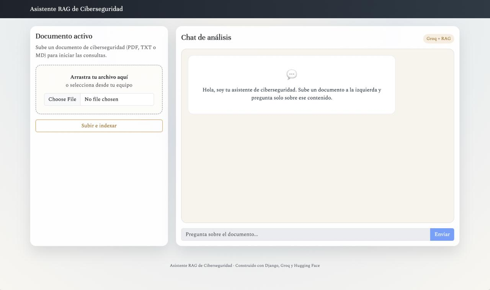
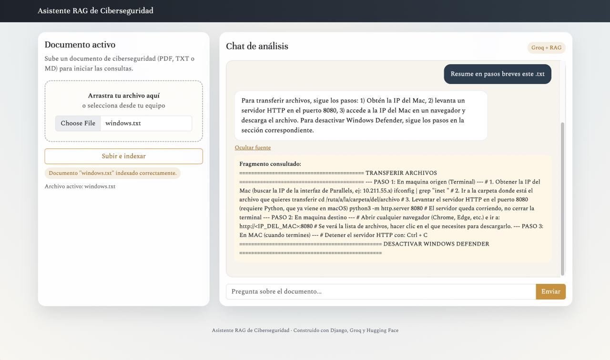

Documento, vectores y respuestas auditables
Tres capas orquestadas por Django: cliente en el navegador, backend con el motor RAG, y servicios externos para embeddings y generación. Cada usuario opera sobre un índice FAISS aislado por sesión.
Cada chunk del documento se convierte en un vector numérico que captura su significado. La pregunta del usuario sigue el mismo proceso para luego compararse con los vectores almacenados.
¿Por qué 1000? Equivale a 200-250 tokens (2-3 párrafos). Ideal para que el modelo MiniLM capture una idea completa sin diluir su significado.
¿Por qué 150 de overlap? Rescata un par de oraciones en los bordes para asegurar que las definiciones divididas no pierdan sentido.
Dos paneles: a la izquierda la carga del documento, a la derecha el chat. La interfaz es responsive, semántica (ARIA + skip link) y mantiene la paleta sobria del proyecto.

Cada respuesta del asistente incluye un botón "Ver fuente" que despliega el fragmento exacto del documento usado para responder. Las respuestas oficiales (no-ciber, no-contexto) no exponen fuente.

truedoc_is_cybersecurity — corpus es de ciberseguridad
question_is_cybersecurity — pregunta temática
answer_in_context — respuesta hallada en chunks
Datos de ejemplo · reemplazar con los valores reales del CSV/JSON generado en reports/.
Relevancia = la respuesta satisface la intención de la pregunta apoyándose en evidencia del documento. Las respuestas oficiales (no-ciber, sin-contexto) no son alucinaciones: son el comportamiento esperado del guardrail.
Un hacker ético opera con autorización explícita del propietario del sistema; su objetivo es identificar y reportar vulnerabilidades para que sean corregidas. El hacker malicioso actúa sin permiso y persigue beneficio personal o daño.
"No encuentro esa información en el reglamento."
"pentesting carrera", pero ninguno menciona OSCP, CEH ni GPEN. El guardrail funcionó: devolvió la cadena oficial en vez de inventar nombres. Mejoras: aumentar k a 6-8, reducir CHUNK_SIZE, o enriquecer el corpus con un doc de certificaciones.